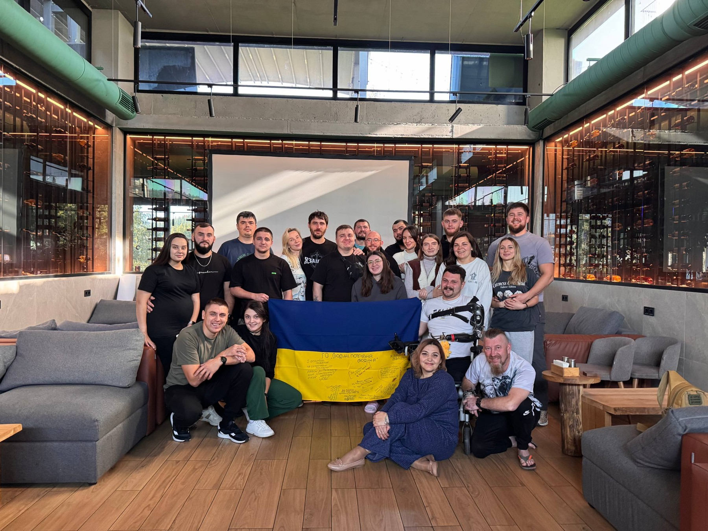
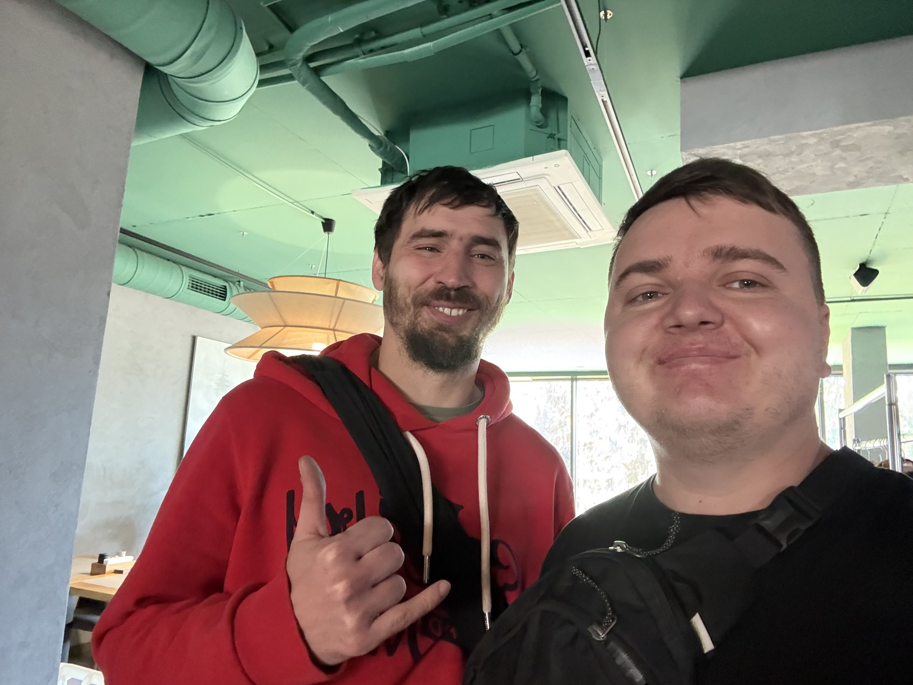
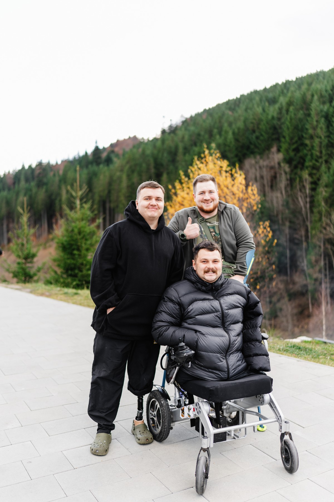
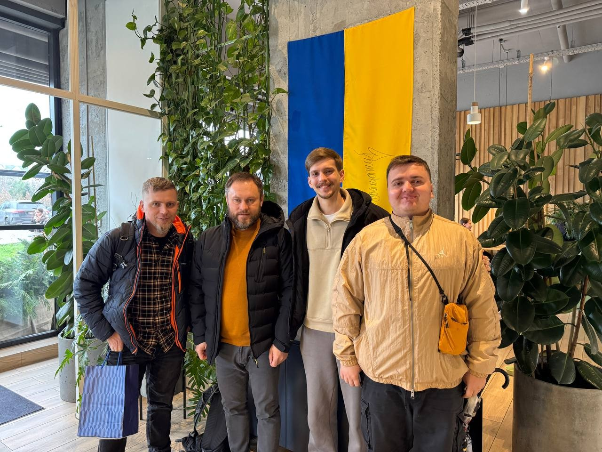

Зустрічі, що дають силу
Дорогі друзі, радий поділитися подіями цього місяця — від ветеранського ретриту, де я познайомився з Хантом і Сашею, до онлайн-зустрічей і відвідин госпіталю у Львові.

Атмосфера була спокійною та щирою — час для розмов, слухання історій і простір, де кожен міг бути собою.
Ветеранський ретрит


«У всьому нас тиснуть, та не потиснені ми; ми в важких обставинах, та не впадаєм у розпач... ми повалені, та не погублені»
— 2 Коринтян 4:8–9
Цього місяця я був на ветеранському ретриті, і це стало одним із найцінніших досвідів листопада. Атмосфера була спокійною та щирою — багато часу для розмов, слухання історій і простору, де кожен міг бути собою.
На ретриті був один досить відомий у певних колах ветеран із позивним «Хант». Він приїхав до України з росії на початку повномасштабного вторгнення і з того часу воює на нашому боці. Незважаючи на значну кількість поранень, він продовжує служити, і його стійкість справляє сильне враження. Поруч із ним були ветерани, які не є медійними, але їхня цінність для нашої країни не менша — на кріслі колісному був Саша, чоловік, у якого залишилась лише одна рука, але який далі продовжує жити, допомагати й підтримувати інших.
Дуже боляче чути, що в суспільстві інколи з'являються наративи, ніби все це було марно. Але це наша країна, наша земля, наші близькі люди — і саме завдяки меншості, яка не здалася, ми досі живі й досі тримаємося. Важливо нагадувати собі й іншим правду: вони зробили свідомий вибір захищати нас.
Особливо надихають ті, хто після поранення продовжує жити, створювати, розвиватися, підтримувати інших. Прошу молитись, щоб нові знайомства та спілкування, які почалися на ретриті, могли продовжуватися й приносити добрий плід.
Зустрічі у Львові та служіння ветеранам

«Був недужий — і Мене ви відвідали»
— Матвія 25:36
Наприкінці місяця я мав можливість зустрітися у Львові з членом нашої команди та потенційним новим учасником. Це були теплі й змістовні дні — ми багато говорили про служіння, бачення та наступні кроки.
Також ми відвідали військовий госпіталь. Мали можливість поспілкуватися з хлопцями, які зараз перебувають на лікуванні — просто бути поруч, слухати, підтримати, сказати кілька слів, які можуть зміцнити людину в непростий момент.
Окрім цього, нам вдалося знайти волонтерську організацію, яка готова допомагати ветеранам у лікарні адаптивним одягом. Це велика потреба, і я вдячний Богові, що з'явилася можливість з'єднати тих, хто може допомогти, з тими, хто потребує підтримки.
Нові кроки
Долучився до онлайн-зустрічей для ветеранів. Раніше мені здавалося, що для доброго спілкування треба зібрати велику групу людей. Але цей досвід показав, що найважливіше — не кількість, а якість розмови: навіть невелика група може мати дуже глибоку й наповнюючу дискусію.
Це стало для мене гарним підбадьоренням і допомогло переглянути свої очікування щодо формату наших майбутніх зустрічей.
Стати партнером
Ваша підтримка дає змогу бути поруч із ветеранами — на ретритах і в госпіталях.
Молитовні потреби
- •За продовження спілкування з хлопцями після ретриту та формування довірливих стосунків.
- •За мудрість у побудові команди та у подальших кроках служіння.
- •За емоційне й духовне відновлення.
- •За складання іспиту на водійські права — щоб з Божою допомогою зміг здати і використовувати авто для служіння іншим.
«Милості Господні не покінчились, бо не покінчилось милосердя Його! Нове воно кожного ранку»
— Плач Єремії 3:22–23
Олександр Килюшик
З благословенням у Христі
Служіння серед військових · Місія «Україна для Христа»